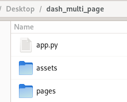

Chapter 14: Introduction to Multi-page Apps
Contents
Chapter 14: Introduction to Multi-page Apps¶
What you will learn¶
In this chapter we will introduce multi-page apps which will allow us to build more complex apps.
Learning Intentions
How to structure multi-page apps project
Navigate between apps
Why separate app into multiple pages?¶
Advantages
Easy to develop small apps and features
Easy to troubleshoot bugs
New apps can be built on to old apps
Disadvantages
Extra infrastructure is required
Slightly more complex apps
Structure of Multi-page Apps¶
Let’s start our multi-page app by creating a root directory folder called dash_multi_page. Within the dash_multi_page directory create the main app file called app.py and a subdirectory called pages:

Pages are displayed in the dash.page_container component that we will add to app.layout. We’ll borrow from an example on Github and create an app that uses a navigation bar with a dropdown menu:
In app.py copy/paste the following code:
import dash
import dash_bootstrap_components as dbc
app = dash.Dash(__name__, use_pages=True, external_stylesheets=[dbc.themes.BOOTSTRAP])
navbar = dbc.NavbarSimple(
dbc.DropdownMenu(
[
dbc.DropdownMenuItem(page["name"], href=page["path"])
for page in dash.page_registry.values()
if page["module"] != "pages.not_found_404"
],
nav=True,
label="More Pages",
),
)
app.layout = dbc.Container(
[navbar, dash.page_container],
fluid=True,
)
if __name__ == "__main__":
app.run_server(debug=True)
Next we need to create the individual apps. Let’s use example apps we’ve developed in past chapters. First, we’ll use example 8.2.3. To make this app work with our multi-page example we need to add dash.register_page(__name__) and remove all references to app because it should only be declared in the main app.py file :
import dash
from dash import dcc, callback, Input, Output
import plotly.express as px
import dash_bootstrap_components as dbc
dash.register_page(__name__)
# Data
df = px.data.gapminder()
# App Layout
layout = dbc.Container([
dcc.Markdown("# Interactive Dash App with Line Chart"),
dbc.Row([
dbc.Col([
dcc.Dropdown(id='country-dropdown',
options=[x for x in df.country.unique()],
multi=True,
value=['Canada', 'Brazil'])
], width=8)
]),
dbc.Row([
dbc.Col([
dcc.Graph(id='figure1')
], width = 8)
])
])
# Configure Callback
@callback(
Output('figure1','figure'),
Input('country-dropdown', 'value')
)
def udpate_graph(countries_selected):
df_filtered = df[df.country.isin(countries_selected)]
fig = px.line(df_filtered, x='year', y='lifeExp', color='country')
return fig